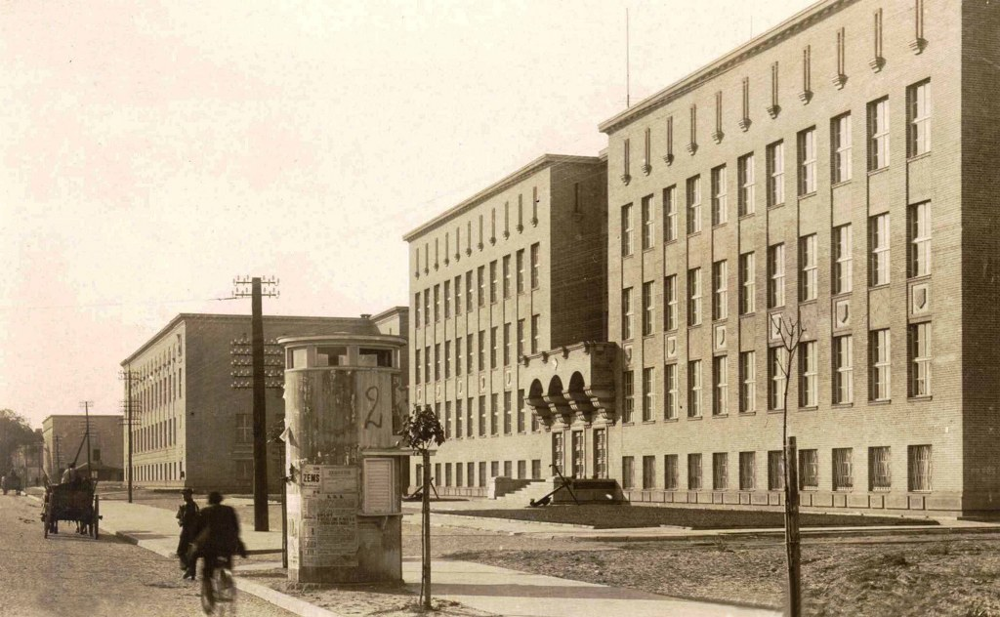
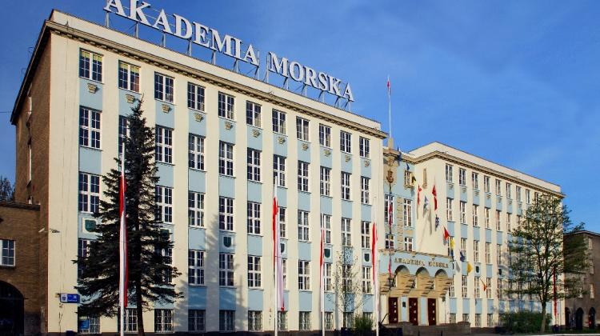

Uniwersytet Morski w Gdyni (UMG) jest kontynuatorem tradycji i następcą prawnym Szkoły Morskiej utworzonej 17 czerwca 1920 roku w Tczewie, a także: polskich szkół morskich w Londynie i Southampton, kształcących kadry morskie w czasie II wojny światowej, a następnie Państwowej Szkoły Morskiej, Państwowej Szkoły Rybołówstwa Morskiego i Wyższej Szkoły Morskiej w Gdyni.
Uniwersytet Morski w Gdyni, będąc akademicką uczelnią publiczną, działa na podstawie ustawy z dnia 27 lipca 2005 roku - Prawo o szkolnictwie wyższym (Dz. U. Nr 164, poz. 1365 z późn. zm.) oraz statutu UMG. Siedzibą Uniwersytetu jest miasto Gdynia.
Parlament Studentów reprezentuje studentów przed władzami uczelni i na zewnątrz. Misją Parlamentu Studentów Uniwersytetu Morskiego w Gdyni jest zagwarantowanie każdemu studentowi tej uczelni odpowiednich warunków do studiowania i rozwijania swoich pasji. Ma swoich przedstawicieli w Senacie, radach wydziału i komisjach uczelnianych. Reprezentuje studentów również na forum ogólnopolskim w Parlamencie Studentów RP oraz Forum Uczelni Technicznych.
ChórW szkole działa Chór Uniwersytetu Morskiego w Gdyni. To pierwszy akademicki chór działający w naszym mieście. Powstał jesienią 2001 roku z inicjatywy studentów tej Uczelni, wśród jego członków znajdują się pracownicy, studenci UMG a także absolwenci oraz osoby spoza Uczelni. Chór na za sobą wiele koncertów, również na zagranicznych tournee, i ma w swoim dorobku nagrody w międzynarodowych konkursach.
Koła naukoweKoła naukowe stwarzają studentom niepowtarzalną szansę rozwoju ich pasji, zainteresowań i umiejętności. Członkowie kół naukowych aktywnie uczestniczą w wyjazdach integracyjnych, promocyjnych, konferencjach oraz szkoleniach podczas których mają możliwość poznania wielu ciekawych ludzi, w tym również swoich potencjalnych pracodawców.
